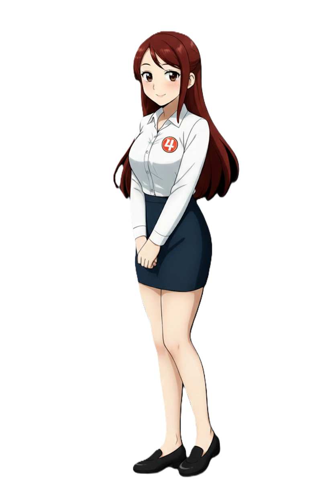

다로나 4호선
Da Rona | 多露娜 | Tadano Rona
| 다로나 Da Rona |
|
|---|---|
|
 기본
SD
효빈교통공사 4호선 공식 마스코트
|
|
| 이름 | 다로나 (Da Rona) 日本名: Tadano Rona (多田野 露娜) |
| 나이 | 22세 (2003년생) |
| 생일 | 3월 5일 [1] |
| 소속 | 효빈교통공사 기술본부 산업관리직 (주임) |
| 신장 | 156.5cm |
| 출신지 | 효빈광역시 안천구 이자동 |
| 학력 |
이자초등학교 (졸업) 이자중학교 (졸업) 창전상업고등학교 (철도산업과 / 졸업) |
| 가족 관계 | 조부모님, 부모님, 남동생 |
| MBTI | ISFJ (용감한 수호자) |
| 별명 | 소심대쪽, AI 주임, 골목대장(빵집), 주황색 치와와, 걸어다니는 철도안전법 |
| 성우 |
日: 타네자키 아츠미 [3] 韓: 윤아영 |
"저... 저기... 거기는 들어가시면 안 되는데요...!
(0.5초 뒤) 삐이익-!! 지금 즉시 물러나시기 바랍니다. 철도안전법 제48조 위반입니다."
1. 개요
효빈권 광역전철 4호선을 상징하는 마스코트 캐릭터입니다. 2006년 데뷔하였으며, 효빈교통공사 기술본부 소속의 산업관리직 주임으로 재직 중입니다.
4호선의 상징색인 주황색(#FF5522) 제복을 단정하게 차려입고 있으며, 항상 손에 꽉 쥐고 있는 호루라기와 경광봉, 그리고 무기(?)처럼 보이는 거대한 클립보드가 트레이드 마크입니다. 특성화고를 졸업하고 바로 공사에 입사하여 20대 초반의 어린 나이에 주임 직급을 달고 활약하는 '고졸 취업 성공 신화'의 주인공이기도 합니다. 평소에는 바스락거리는 소리에도 놀라는 소심한 성격이지만, 안전 수칙 위반이나 불법 행위를 목격하면 눈동자의 하이라이트가 꺼지며 무자비한 원칙주의 로봇으로 돌변하는 외유내강형 캐릭터입니다. 평소엔 연약해 보이지만, 위기 상황이 발생하면 누구보다 냉철하고 유능해지는 든든한 면모를 갖추고 있습니다.
2. 상세 설정
2.1. 성격 및 특징 (소심대쪽)
기본적으로 내성적이고 남의 눈치를 심하게 보는 전형적인 ISFJ 성향입니다. 커피 주문 하나 할 때도 시나리오를 머릿속으로 세 번은 돌려보고 입을 떼며, 일상에서 예상치 못한 '변수'가 생기면 극도로 당황하곤 합니다. 이 지독한 변수 공포증을 이겨내기 위해, 그녀는 하루 일과를 분 단위로 쪼갠 체크리스트를 클립보드에 들고 다니며 상황을 완벽하게 통제하려 노력합니다. 당황했을 때 이 체크리스트를 중얼거리는 속도는 래퍼를 방불케 할 정도로 엄청나게 빠릅니다.
감정 표현이 서툴고 쑥스러움이 많아 일상 대화에서도 "~하시기 바랍니다", "~로 판단됩니다" 같은 극도로 딱딱한 공문체(비즈니스 화법)를 구사합니다. 선배가 "다로나 주임 오늘 머리 예쁘게 묶었네~" 하고 칭찬하면 얼굴이 붉어지면서도 "복장 및 용모 규정 12조에 부합하는 정상적인 상태입니다."라고 대답해 분위기를 묘하게 만드는 재주가 있습니다. 하지만 그 이면에는 야근하는 동료 서랍에 남몰래 핫팩과 홍삼 스틱을 밀어 넣어두는 따뜻한 배려심이 자리 잡고 있습니다.
하지만 이 소심한 성격은 '안전선 침범', '스크린도어 기대기', '지하철 무단 촬영' 등의 행위를 목격하는 순간 180도 뒤집힙니다. 조심스럽던 모습은 온데간데없이 사라지고, 냉혹한 심판자로 각성하여 엄청난 발성과 눈빛으로 주변을 압도합니다. 그녀가 가장 싫어하는 마인드는 "이 정도면 괜찮겠지" 하는 안일함입니다. 안전 불감증 앞에서는 자비란 없으며, 위반 사항을 적발할 때 철도안전법 몇 조 몇 항인지까지 토씨 하나 틀리지 않고 줄줄 읊어버립니다.
2.2. 학력 및 능력
안천구의 이자초, 이자중을 거쳐 효빈시의 명문 특성화고인 창전상업고등학교(철도산업과)에 진학했습니다. 고교 시절 내내 전교 1등을 놓치지 않았으며, 관련 자격증을 모두 휩쓴 수재입니다. 대학 간판보다는 빠른 현장 실무를 택해, 엄청난 경쟁률을 뚫고 19세에 공사 기술직 공채에 합격했습니다. 명문대 출신 동료들도 다로나 주임의 완벽한 엑셀 솜씨와 매뉴얼 숙지도 앞에서는 감탄을 금치 못합니다.
| 과목 | 등급 (내신) | 비고 |
|---|---|---|
| 수학 | 2 ~ 3등급 | 기계 역학과 운영 시스템의 논리적 구조를 매우 빠르게 이해합니다. |
| 과학 | 2 ~ 3등급 | 물리적 법칙, 특히 안전 공학과 하중 계산 쪽에 특화되어 있습니다. 다만 지구과학 과목은 가볍게 포기했다는 일화가 있습니다. |
| 국어 | 3 ~ 4등급 | 문학적 감수성은 다소 부족하여 시(詩)를 읽으면 "화자의 동선이 비효율적이고 안전이 우려됩니다"라고 평가하곤 합니다. 대신 비문학(매뉴얼 독해) 능력이 뛰어납니다. |
| 영어 | 3 ~ 4등급 | 기계 부품 영단어와 실무용 약어(Acronym)만을 기가 막히게 암기합니다. |
| 사회 | 4 ~ 5등급 | 사내 정치나 복잡한 사회생활의 눈치를 전혀 이해하지 못하는 순수한 면이 있습니다. |
안전 규정 암기 속도는 전사 1위입니다. 다만 1호선의 고나미나 7호선의 임세하 같은 하드코어 철도 동호인들과는 결이 다릅니다. 그녀의 철덕 레벨은 C랭크 정도로, 열차 자체의 매력보다는 '오차 없이 안전하게 굴러가는 거대한 시스템'으로서 직업 정신을 투철하게 발휘하는 것에 가깝습니다.
2.3. 정치 성향 (트라우마가 만든 확고한 신념)
- 對 윤대환 (전 시장): 확고한 반감. 다로나가 유독 '안전'과 '매뉴얼'에 광적으로 집착하게 된 근본적인 원인입니다. 다로나가 입사했을 당시가 바로 윤대환 전 시장의 과도한 예산 삭감이 극에 달했던 시기였습니다. 부품 교체조차 제대로 못 하고, 4호선 해운단지 연장 계획마저 백지화되며 현장의 피로도가 극에 달했던 '지옥의 5년'을 신입 사원 시절 온몸으로 겪어냈기 때문입니다. 당시의 고생이 깊은 트라우마로 남아, 윤대환의 이름만 들려도 "안전을 비용으로 환산한 자는 책임을 져야 합니다"라며 분노를 표출하곤 합니다.
- 對 박효빈 (현 시장): 조용한 지지와 굳건한 신뢰. 현 박효빈 시장이 현장 안전 인력을 대거 충원하며 자신과 같은 특성화고 인재들에게도 공정한 기회를 열어준 것에 대해 깊은 감사를 느끼고 있습니다. 성격상 남들 앞에서 대놓고 찬양하지는 못하지만, 누군가 박효빈 시장의 정책을 비판하면 조용히 엑셀 창을 켜서 전년 대비 사고 감소율과 예산 효율성 지표를 소수점 단위까지 읊으며 논리적인 방어를 시전하는 든든한 지지자입니다.
2.4. 외형 및 디자인 (초식동물의 탈을 쓴 사신)
단정하게 빗어 넘긴 적갈색의 긴 생머리와 크고 순한 눈망울, 그리고 옅은 미소가 특징입니다. 전체적으로 '순둥순둥하고 얌전한 초식동물' 혹은 '바스락 소리에도 놀라는 햄스터' 같은 인상을 주며, 작은 민원에도 화들짝 놀라며 당황할 것 같은 가냘픈 비주얼을 자랑합니다. 물론 규정을 어긴 자에게는 그 가냘픔이 순식간에 공포로 바뀌어 다가갑니다.
복장은 현장 근무가 주력인 고나미나 하루빈의 화려한 제복과는 결이 다른 깔끔하고 실용적인 오피스룩입니다. 몸에 꼭 맞는 하얀색 셔츠의 왼쪽 가슴에는 4호선의 상징색인 주황색(#FF5522) 배경에 숫자 '4'가 적힌 배지를 달고 있으며, 단정한 네이비색 H라인 스커트와 장시간 서류 업무에 최적화된 검은색 단화를 매치했습니다. 이는 그녀가 공사 기술본부 소속의 산업관리직(사무직)임을 단적으로 보여주는 디자인입니다.
공식 일러스트에서 두 손을 다소곳이 모으고 있는 포즈는 그녀의 극도로 소심하고 조심스러운 성격을 대변합니다. 하지만 팬들과 동료들 사이에서는 저 다소곳한 손 뒤에 항상 거대한 '심판의 클립보드'가 감춰져 있다는 것이 정설입니다. 평소엔 한없이 가냘픈 사무직 직원이지만, 스크린도어에 기대거나 부정 승차를 시도하는 인물이 등장하면 눈빛이 완전히 달라집니다. 그 순간 다소곳했던 손에서 철도안전법 위반 과태료 스티커가 빛의 속도로 뽑혀 나오며, 공문체를 속사포 랩하듯 쏟아내는 반전 매력이 시각적으로 훌륭하게 구현되어 있습니다.
2.5. 성우 연기톤 (성대 2개 탑재설)
평소의 '소심하고 주눅 든 톤'과 규정 위반자를 적발할 때의 '감정이 배제된 기계적인 톤'의 대비가 극명하게 갈리는 놀라운 갭 모에를 자랑합니다. 한일 양국 성우 모두 이 극단적인 성격 변화 연기를 완벽하게 소화해 내어 찬사를 받고 있습니다.
한국판 담당 성우인 윤아영 님은 소심한 소년 연기부터 매혹적인 누님 연기까지 스펙트럼이 매우 넓은 성우입니다. 다로나 연기에서는 평소 "저, 저기요... 서류 결재 좀..." 하며 금방이라도 울 것 같은 가련하고 떨리는 목소리를 냅니다. 하지만 호루라기를 부는 순간 180도 돌변하여, 시끄러운 환승역의 소음을 뚫고 꽂히는 차갑고 기계적인 딕션으로 분위기를 제압합니다. "안전선 이탈입니다. 지금 즉시 뒤로 물러나지 않으시면 과태료 부과 대상이 됩니다."라고 자비 없이 선고하는 단호한 톤 덕분에 민원인들이 가장 무서워하는 목소리로 꼽히기도 합니다.
일본판 담당 성우인 타네자키 아츠미 님의 배정은 그야말로 '신의 한 수'로 불립니다. 평소에는 한없이 작고 귀여운 어린아이(아냐 포저 등) 톤을 내다가도, 각성하는 순간 냉철한 AI 로봇이나 마법사(Vivy, 프리렌 등)처럼 감정이 완벽히 배제된 서늘한 목소리로 돌변합니다. 한 사람의 목소리라고는 믿기 힘든 이 엄청난 차이 때문에, 동료인 하루빈이 "너 솔직히 등 뒤에 성우 두 명 숨겨놓고 다니지?"라고 진지하게 물어봤다는 공식 개그 설정까지 생겨났습니다.
3. 인간 관계
다로나의 아픈 손가락이자 최우선 밀착 보호 대상입니다. 효빈기계공고에 재학 중인 유리아를 친동생처럼 아낍니다. 특성화고 출신이라는 강한 유대감 때문에 본인이 직접 멘토를 자처했지만, 호기심 많은 유리아가 정체불명의 제어판에 손을 대려 할 때마다 수명이 줄어드는 기분을 느낍니다. 유리아가 사고 칠 낌새가 보이면 멀리서도 "위험합니다!!" 하고 번개처럼 달려와 막아섭니다.
하늘 같은 선배님이자 가장 존경하고 두려워하는 대상입니다. 무서운 고나미 선배가 4호선으로 업무를 올 때면 다로나는 긴장한 나머지 클립보드를 쥔 손에 땀을 쥐곤 합니다. 하지만 정작 고나미는 다로나의 빈틈없는 완벽주의와 매뉴얼 집착을 보며 "훌륭한 후배군."이라며 내심 칭찬을 아끼지 않습니다. 둘이 만나면 엑셀 서식 정리를 두고 진지하게 토론하는 모습을 볼 수 있습니다.
성가신 천적이자 든든한 동료입니다. 다로나가 진지하게 공문체로 업무 브리핑을 하면, 하루빈이 옆에서 "와 우리 공사 드디어 AI 로봇 도입함? 성우 패치 미쳤네~ 시리야 오늘 날씨 어때?"라며 짓궂게 장난을 칩니다. 다로나가 당황해서 얼굴이 붉어지는 걸 악동처럼 즐기지만, 다로나가 업무 스트레스로 힘들어하면 귀신같이 알아채고 사능동 빵집으로 데려가 맛있는 소금빵을 입에 물려주는 미운 정 고운 정 다 든 사이입니다.
4. 러닝 개그 및 특수 설정
🤖 소름 돋는 AI 주임 (TTS 패치 완벽 호환)
극도로 긴장하거나 업무에 완벽히 몰입하면, 감정이 전혀 없는 'AI 안내방송 톤'으로 말하는 독특한 직업병을 가지고 있습니다. 발음의 정확도, 띄어쓰기 간격, 일정한 억양이 마치 기계음처럼 완벽합니다.
하루빈이 다로나가 안내 문구를 읽는 목소리를 몰래 녹음해서, 역내 자동 안내방송(TTS) 시스템에 몰래 덮어씌운 적이 있었습니다. 지나가는 승객은 물론이고 역사 직원들조차 진짜 기계음인 줄 알고 전혀 위화감을 느끼지 못해 전설적인 일화로 남았습니다. 나중에 이 사실을 안 다로나는 하루빈에게 10장짜리 규정 위반 시말서 청구 공문을 보냈다고 합니다. [2]
🍞 은밀한 사능동 골목대장 (휴먼 빵집 엑셀러)
3호선 박라미가 '감성'으로 빵집을 방문한다면, 다로나는 '데이터'로 빵집을 지배합니다. 다로나는 4호선과 3호선이 겹치는 '빵의 성지' 사능동 골목의 모든 베이커리 출빵 시간, 요일별 재고 소진율, 할인 이벤트 주기, 빵 굽는 온도차까지 엑셀 데이터로 분석하여 머릿속에 철저히 저장해두고 있습니다.
덕분에 가장 효율적인 1분 1초의 동선으로 갓 구운 한정판 소금빵과 까눌레를 구매하는 스킬을 지녀 '사능동 골목대장'이라는 귀여운 별명을 얻었습니다. 가끔 박라미가 감성 사진을 찍느라 빵을 못 사고 시무룩해 있으면, 옆에서 무표정한 얼굴로 소금빵 봉지를 쓱 건네주곤 쿨하게 인파 속으로 사라지는 멋진 면모를 보여줍니다.
5. 여담
- [밈] 별을 찾는 고양이귀 기타리스트와의 환장할 평행이론: 4호선의 상징색이 주황색(#FF5522)이다 보니, 서브컬처 팬덤에서는 애니메이션 뱅드림!의 캐릭터 '토야마 카스미'와 엮이는 밈이 강력하게 형성되어 있습니다. 카스미의 실제 컬러는 빨간색에 가깝지만, 특유의 별 모양 머리와 넘치는 웜톤 에너지 덕분에 주황색 계열인 다로나와 짝을 이루게 되었습니다. 예상치 못한 돌발 상황을 싫어하는 ISFJ 다로나에게, 시도 때도 없이 다가와 하이텐션으로 안기는 카스미의 성격은 극과 극의 조화를 이룹니다. 팬아트에서는 카스미의 머리띠를 강제로 착용하고 당황스러워하는 다로나의 모습이 자주 그려지며 팬들에게 큰 웃음을 선사합니다.
- 이름의 유래: 일본어 이름인 '타다노 로나(Tadano Rona)'는 일본어 '타다노(ただの, 그저, 평범한)'에서 따온 것이 공식 설정입니다. 항상 "저는 그저 평범한 직원일 뿐입니다"가 입버릇이기 때문입니다. 하지만 위기 대처 능력을 보면 결코 평범하지 않은 대단한 실력자입니다.
- 실무로 다져진 '갓생'의 밸런스: 단체 휴가 사진에서 공개된 체형 데이터는 80(B) - 59(W) - 82(H)입니다. 156.5cm의 아담한 키에도 불구하고, 매일 아침 4호선의 출퇴근 지옥철에서 버티며 다져진 코어 근육과 군살 없는 탄탄한 라인이 특징입니다. "가장 현실적으로 워너비인 건강한 슬림핏"이라는 평이 지배적입니다. 사실 현장 점검 때 무거운 장비를 매일 들고 다녀서 생긴 건강미라는 소문도 있습니다. 사복을 입었을 때 드러나는 탄탄한 복근 라인은 기술본부 내에서도 유명하지만, 본인은 가사 노동의 결과라며 매우 부끄러워합니다.
- 현실적인 체력 관리: "산업 현장에서 안전을 지키려면 일단 내 몸부터 튼튼해야 한다"는 신념에 따라 주말마다 4호선 연선 등산을 즐깁니다. 해변에서도 화려한 수영복보다는 활동성이 보장된 래시가드를 선호하는데, 그 모습마저도 '모범적인 우수 사원' 같은 바른 생활 이미지를 풍겨 팬들의 사랑을 받습니다.
- 4호선 짬바의 산증인: 거친 공단 지역을 지나는 4호선의 특성상 압도적인 지옥철 혼잡도를 견디며 성장했습니다. 덕분에 평소엔 연약한 유리 멘탈처럼 보이지만, 인내심과 멘탈 회복력 하나만큼은 단단한 철근 콘크리트 수준입니다. 진상 민원인 앞에서도 무표정하게 규정을 읊으며 속으로 평정심을 유지하는 베테랑입니다.
- 최강의 '뒤처리 전담반': 알코올 분해 능력이 전혀 없어 술을 입에도 대지 못하지만, 부서 회식 자리에서는 항상 사이다만 마시며 끝까지 남아 동료들의 귀가를 돕고 결제까지 완벽하게 마무리하는 천사 같은 역할을 도맡습니다. 물론 다음날 아침에는 숙취로 고생하는 동료들에게 "음주는 건강을 해치는 지름길입니다"라며 팩트 폭력을 시전하는 철저함도 잊지 않습니다.
각주
- 4호선 최초 개통일(1996.3.5)과 동일한 날짜입니다.
- 공문체를 읽을 때 숨소리조차 일정하게 유지하며 0.1초의 오차도 없는 또박또박한 딕션을 구사하는 그녀의 능력을 보여주는 재미있는 에피소드입니다.
- 소심한 어린아이의 목소리 톤과 각성 시의 냉철한 목소리 톤의 엄청난 갭 차이를 완벽하게 소화해 낸 성우진의 훌륭한 연기력을 의미합니다.